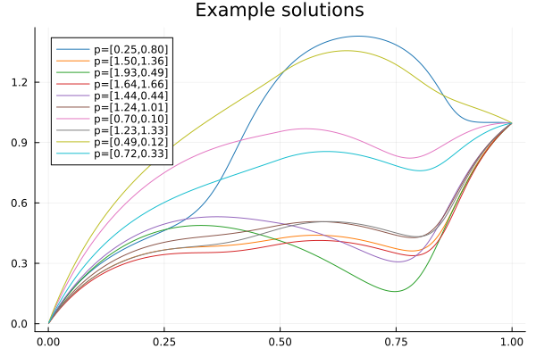

Test Problem
Consider the parametrized PDE problem
\[\begin{cases}-\frac{d}{dx} \left(\kappa(x,p) \frac{d}{dx} u(x,p)\right) = f(x,p),\quad x\in[0,1]\\ u(0,p) = 0.0\\ u(1,p) = 1.0\\ 0.1\leq p_1,p_2\leq 2.1 \end{cases}\]
where
\[\kappa(x,p) = \sum_{i=1}^2 p_i \cdot (1.1 + \sin(2\pi i x)),\]
and
\[f(x,p) = \begin{cases}10.0 & x > 0.5 \\ 0.0 & x \leq 0.5\end{cases}\bigg\} + \sum_{i=1}^2 p_i \cdot \sin(2\pi i x)\]
are affinely parameter dependent diffusion coefficient and forcing terms respectively.
We can discretize and explicitly solve this problem by using finite differences, the problem can be rewritten as
\[A(p) u = b(p)\]
where $u\in\mathbb{R}^n$, $A(p)\in\mathbb{R}^{n\times n}$ is a positive-definite matrix, and both $A(p)$ and $b(p)\in\mathbb{R}^n$ have affine parameter dependence.
using ModelOrderReductionToolkit
using Plots
using Printf
# Boundary conditions
uleft = 0.0
uright = 1.0
P = 2
κ_i(i,x) = 1.1 .+ sin.(2π * i * x)
κ(x,p) = sum([p[i] * κ_i(i,x) for i in 1:P])
# Derivative of diffusion coefficient
κp_i(i,x) = 2π * i * cos.(2π * i * x)
κp(x,p) = sum([p[i] * κp_i(i,x) for i in 1:P])
# Parameter dependent source term
f_i(i,x) = i == 1 ? (x .> 0.5) .* 10.0 : 20 .* sin.(2π * (i-1) * x)
f(x,p) = f_i(1,x) .+ sum([p[i-1] * f_i(i,x) for i in 2:P+1])
# Space setup
h = 1e-3
xs = Vector((0:h:1)[2:end-1])
N = length(xs)
# Helper to generate random parameter vector
randP() = 0.1 .+ 2 .* rand(P)
# Ai matrices
function makeAi(i)
A = zeros(N,N)
for j in 1:N
A[j,j] = 2*κ_i(i,xs[j]) / h^2
if j<N
A[j,j+1] = -κp_i(i,xs[j]) / (2h) - κ_i(i,xs[j]) / h^2
end
if j>1
A[j,j-1] = κp_i(i,xs[j]) / (2h) - κ_i(i,xs[j]) / h^2
end
end
return A
end
Ais = Matrix{Float64}[]
for i in 1:P
push!(Ais, makeAi(i))
end
# θAis
function makeθAi(p,i)
return p[i]
end
function makeA(p)
A = zeros(size(Ais[1]))
for i in eachindex(Ais)
A .+= makeθAi(p,i) .* Ais[i]
end
return A
end
# bi vectors
function makebi(i)
b = f_i(i,xs)
if i > 1
b[1] -= uleft * (κp_i(i,xs[1]) / (2h) - κ_i(i,xs[1]) / h^2)
b[end] -= uright * (-κp_i(i,xs[N]) / (2h) - κ_i(i,xs[N]) / h^2)
end
return b
end
bis = Vector{Float64}[]
for i in 1:P+1
push!(bis, makebi(i))
end
# θbis
function makeθbi(p,i)
if i == 1
return 1.0
else
return p[i-1]
end
end
function makeb(p)
b = zeros(size(bis[1]))
for i in eachindex(bis)
b .+= makeθbi(p,i) .* bis[i]
end
return b
end
plt = plot(legend=:topleft)
for i in 1:10
p = randP()
A = makeA(p)
b = makeb(p)
u = A \ b
plot!(xs, u, label=@sprintf("p=[%.2f,%.2f]",p...), alpha=0.5)
end
title!("Example solutions")GKS: cannot open display - headless operation mode active
We will construct a reduced basis method (RBM) to construct an $r$-dimensional solution space to construct approximations
\[u(p) \approx V u_r(p) = \sum_{i=1}^r u_r^{(i)}(p) v_i\]
where $\{v_i\}_{i=1}^r$ is a chosen basis with $u_r(p)\in\mathbb{R}^r$, $V\in\mathbb{R}^{n\times r}$, and $r\ll n$. Additionally, due to the potential computational cost of inverting large $A(p)$, we wish to minimize the number of times we solve the full-order, truth, system.
Defining $e(p)=u(p) - u_r(p)$ to be the error in our approximation, and $r(p)=b(p) - u_r(p)$ to be the residual, one can show that
\[||e(p)||_2 = ||A(p)^{-1} A(p)(u(p) - u_r(p))||_2 \leq \sigma_{min}(A(p)) ||r(p)||_2.\]
The goal of this method will be to use offline time to approximate the stability factor, $\sigma_{min}(A(p))$, and the norm of the residual, $||r(p)||_2$.
First, we will use the successive constraint method, (SCM), to compute a lower-bound approximation of the stability factor, to assure that the above error inequality still holds. For details on implementation, see reference 1. In ModelOrderReductionToolkit.jl, the implementation for a symmetric positive definite problem is as follows:
# Generate parameter discretization set
p_lb = 0.1
p_ub = 2.1
params = []
for p1 in range(p_lb,p_ub,21)
for p2 in range(p_lb,p_ub,21)
push!(params, [p1,p2])
end
end
# Initialize SCM Object
Ma = 50; Mp = 15; ϵ_SCM = 1e-2;
scm = initialize_SCM_SPD(params, Ais, makeθAi, Ma, Mp, ϵ_SCM)Initialized SCM Object for parametrized symmetric
positive definite matrix A(p) = ∑_{i=1}^QA θ_i(p) A_i.
Mα=50, Mp=15, ϵ=1.0000e-02.As can be seen in the below example, the method find_sigma_bounds(scm,p) returns both an upper-bound and a lower-bound estimate for the stability factor with a relative error on the order of ϵ_SCM as long as it is not too far from a parameter value in the discretization, params.
find_sigma_bounds(scm, randP())(20.70555869828674, 20.729341343566183)Note that in the case that $A(p)$ is not SPD, one should instead use the noncoercive method.
scm = initialize_SCM_Noncoercive(params, Ais, makeθAi, Ma, Mp, ϵ_SCM)With the SCM object initialized, one can call the GreedyRBAffineLinear method to greedily generate a reduced basis, $\{v_i\}_{i=1}^r$, one element at a time, to an $l^2$ error on the order of $\epsilon_{greedy}$, see reference 2,
ϵ_greedy = 1e-1
greedy_sol = GreedyRBAffineLinear(scm, Ais, makeθAi, bis, makeθbi, ϵ_greedy)Initialized reduced basis method for parametrized problem A(p) x = b(p) with affine parameter dependence:
A(p) = ∑ makeθAi(p,i) Ais[i],
b(p) = ∑ makeθbi(p,i) bis[i].
Galerkin projection is used onto an 8 dimensional space:
V' A(p) V x_r = V' b(p),
V x_r ≈ x = A(p)^(-1) b(p).using Colors
colors = palette(:tab10)
plt = plot(legend=:topleft)
for i in 1:10
p = randP()
A = makeA(p)
b = makeb(p)
u = A \ b
u_r = greedy_sol(p)
plot!(xs, u, c=colors[i],label=(i==1 ? "truth" : false))
plot!(xs, u_r, c=colors[i], ls=:dash,label=(i==1 ? "greedy" : false))
end
title!("Example solutions and greedy solutions")
Note that the method GreedyRBAffineLinear takes advantage of the affine parameter dependence of both the left and right hand sides for quick evaluation (approximation) of the norm of the residual, and the stability factor, which does not depend on the dimension of the original problem n. Only after it has looped through all of the parameters in the discretization, it chooses the one that displays the worst upper-bound error, computes the full-order solution for that parameter, and adds that solution as the next reduced basis element, $v_i$.
References:
- D.B.P. Huynh, G. Rozza, S. Sen, A.T. Patera. A successive constraint linear optimization method for lower bounds of parametric coercivity and inf–sup stability constants. Comptes Rendus Mathematique. Volume 345, Issue 8. 2007. Pages 473-478. https://doi.org/10.1016/j.crma.2007.09.019.
- Quarteroni, Alfio, Andrea Manzoni, and Federico Negri. Reduced Basis Methods for Partial Differential Equations. Vol. 92. UNITEXT. Cham: Springer International Publishing, 2016. http://link.springer.com/10.1007/978-3-319-15431-2.